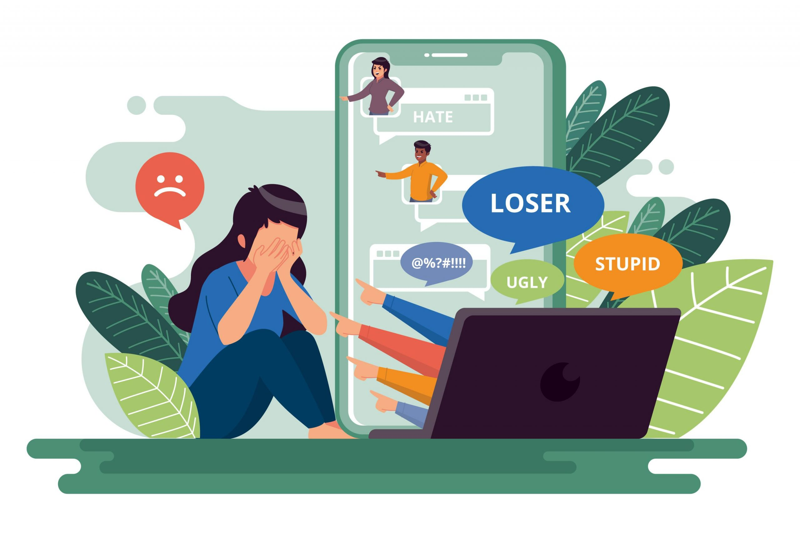

¿Qué es el Uso Responsable de la Tecnología?
- La tecnología, en su esencia, comprende un conjunto dinámico de herramientas, sistemas y aplicaciones que posibilitan
la creación, procesamiento, almacenamiento y transmisión eficiente de información.
El "Uso Responsable de la Tecnología" implica una aproximación ética y consciente
a estas herramientas digitales, con el propósito de optimizar sus beneficios inherentes
mientras se minimizan los riesgos asociados. Este paradigma abarca desde la gestión cuidadosa
de información personal en el ámbito virtual hasta la forma en que interactuamos con dispositivos
tecnológicos en nuestra vida cotidiana.
En un sentido más amplio, el uso responsable de la tecnología engloba:
- Ética Digital:La comprensión y la aplicación de principios éticos fundamentales
al interactuar en línea, como la salvaguarda de la privacidad, la transparencia y la
consideración hacia otros usuarios.
- Seguridad en Línea: La implementación de medidas proactivas para resguardar la información
personal, que van desde el uso de contraseñas robustas hasta la adopción de prácticas avanzadas
de seguridad digital.
- Comportamiento en Redes Sociales: La adopción de un enfoque reflexivo en las interacciones
dentro de plataformas sociales, promoviendo un ambiente virtual positivo y constructivo.
- Equilibrio Digital:La gestión consciente del tiempo dedicado a dispositivos digitales, buscando
mantener un equilibrio armonioso entre la participación en línea y las actividades offline.
Ejemplos de Uso Responsable e Irresponsable:
Responsable:
- Manejo Cauteloso de la Privacidad: Configurar de manera deliberada los ajustes de privacidad
en redes sociales para tener control sobre quién accede a nuestra información personal y en
qué medida.
- Validación Rigurosa de Fuentes: Antes de compartir información en línea, llevar a cabo
una verificación minuciosa de su autenticidad, contribuyendo así a evitar la propagación de
noticias falsas.
- Comunicación Respetuosa en Línea: Adoptar un tono y un estilo de comunicación respetuosos y
constructivos en plataformas virtuales, fomentando un diálogo enriquecedor.
- Gestión Consciente del Tiempo: Establecer límites claros para el uso de dispositivos
digitales, propiciando así la participación en actividades físicas y sociales más allá de la
esfera digital.
Irresponsable:
- Descuido de la Privacidad: Compartir información personal sensible en línea
sin considerar las posibles implicaciones de seguridad y privacidad.
- Participación en Ciberacoso: Involucrarse en prácticas de acoso en línea, como el
envío de mensajes perjudiciales o la divulgación de contenido dañino.
- Diseminación de Desinformación: Compartir información no verificada sin evaluar críticamente su autenticidad,
contribuyendo inadvertidamente a la propagación de noticias falsas.
- Adicción Digital: Sucumbir a largas sesiones de uso digital sin pausas, generando
repercusiones negativas tanto en la salud física como en la salud mental.

El uso responsable de la tecnología representa un imperativo
contemporáneo, esencial para optimizar las ventajas de las herramientas digitales
mientras se preservan la integridad ética y el bienestar personal.